Introduction
Ce que fait QCalc
QCalc est une calculatrice où vous tapez un calcul comme sur papier et obtenez le résultat aussitôt. Les calculs sont faits par libqalculate, le moteur de la calculatrice de bureau Qalculate!.
- De l'arithmétique aux fractions, racines, unités, devises, dérivées, intégrales, équations et matrices, le tout sur une ligne.
- Quand c'est possible, le résultat est exact (√2, π/2, 7/12), avec sa valeur décimale à côté.
- Les calculs de tous les jours, comme les prix, les prêts, les dates, les conversions, les statistiques et les cuves, sont dans « Outils » : saisissez les nombres et le résultat s'affiche.
- Graphiques 2D et 3D, avec aires, longueurs et volumes des solides de révolution.
- QCalc ne collecte aucune donnée personnelle. Il n'utilise internet que pour télécharger les taux de change.
Les résultats sont donnés à titre indicatif. Ne les utilisez pas là où aucune erreur n'est admise, comme le commerce ou la certification, la conception et la construction, ou les déclarations fiscales (avertissements).
Vos trois premiers calculs
Ce qu’il fait Tapez un calcul avec les touches et appuyez sur = : le résultat passe dans l'historique. Pendant la saisie, le résultat s'affiche déjà sous le champ de saisie.
- Ouvrez l'app et tapez
2 + 3 × 4avec les touches. « = 14 » s'affiche sous le champ. - Appuyez sur =. Le calcul et « = 14 » passent dans l'historique et le champ se vide.
- Tapez ensuite
60 mph to km/h(« to » est sur la touche →). « ≈ 96,56064 km/h » s'affiche. - Le troisième est
sqrt(2), aussi avec la touche √ : « = √2 ≈ 1,414213562 », la valeur exacte et la valeur approchée.
1/3 + 1/4 → = 7/12 ≈ 0,5833333333
Touchez un résultat de l'historique pour le mettre dans le champ de saisie ou le copier.
- La lettre x est une variable, pas « fois ». Multipliez avec la touche × (ou *).
Nouveautés de la 1.12.0
- Plus clair : le menu a huit entrées et les outils sont réunis dans Outils. Dans chaque outil, touchez un exemple pour le remplir ; le résultat s'affiche aussitôt.
- Outils du quotidien : Prix : remise et taxe, Pourcentages, Prix unitaire : lequel est moins cher, Partager l’addition, Prêt, Épargne et intérêts composés, Dates, Durées, Convertir unités et devises, Statistiques, Notes de calcul.
- Format des nombres : choisissez 1,234.5, 1.234,5 ou 1 234,5 (Format des nombres).
- Historique : recherche, épinglage avec une étoile, notes courtes, somme des lignes choisies ; touches mémoire (Historique et mémoire).
- De la 2D à la 3D : ⟳ 3D transforme aussitôt une région du graphique en solide de révolution et le montre en 3D (3D : QCalc Pro) ; aussi des solides à sections connues, les lignes de la méthode et le théorème de Guldin (Créer un solide).
- Ouvrir vite : un widget, une vignette des réglages rapides et des raccourcis sur l'icône (Widget, vignette et raccourcis).
- Partager : images des graphiques et GIF animés des graphiques 3D (Partager).
- Solides et cuves en 3D : ⟳ 3D, en haut à gauche du dessin dans Solides et Cuves, montre la forme en 3D avec les dimensions saisies ; dans une cuve, le niveau se fait glisser pour voir la quantité (Solides et cuves en 3D ; la 3D est QCalc Pro).
- Chiffres des résultats : les chiffres des résultats de Formes, Cuves, etc., en décimales ou en chiffres significatifs, par type de grandeur, avec l’arrondi ; tout % a d’abord une décimale (Chiffres des résultats).
- QCalc Pro : CSV des tableaux, fonds de cuves avec barèmes de jaugeage, solides à partir d'un profil, fichiers STL, plus de notes de calcul et plus encore (QCalc Pro).
- Ce manuel : il est dans l'app. Le « ? » en haut à droite d'un outil ou d'un panneau ouvre sa section.
Exemples et astuces dans l'app
Ce qu’il fait Exemples et astuces dans le menu contient des calculs qui passent dans le champ de saisie d'un toucher, et des astuces. Mode d’emploi tout en haut ouvre ce manuel.
- Appuyez sur ☰ en haut à gauche et choisissez Exemples et astuces.
- Touchez un calcul. Le panneau se ferme et le calcul est dans le champ.
- Appuyez sur = pour le calculer.
Ce manuel se lit sans internet. La version détaillée avec photos (web) et le PDF s'ouvrent avec les liens en haut.
L'écran
| N° | Nom | À quoi ça sert |
|---|---|---|
| 1 | ☰ (menu) | Ouvre les outils, les graphiques, les listes, les réglages et plus |
| 2 | Boutons | Changent d'un toucher l'unité d'angle (RAD, DEG), exact ou approché, décimal ou hexadécimal |
| 3 | 🕘 (menu de l'historique) | Rechercher dans l'historique, choisir des lignes, exporter, effacer |
| 4 | Historique | Les calculs et leurs résultats, le plus récent en bas |
| 5 | Champ de saisie | Là où vous tapez ; dessous, le résultat pendant la saisie (l'aperçu) |
| 6 | Pages de touches | Passent d'une des quatre pages 123, Fonctions, Analyse et Matrice à l'autre |
| 7 | Touches | Chiffres, opérateurs et fonctions |
| 8 | Touche = | Calcule et garde le calcul et le résultat dans l'historique |
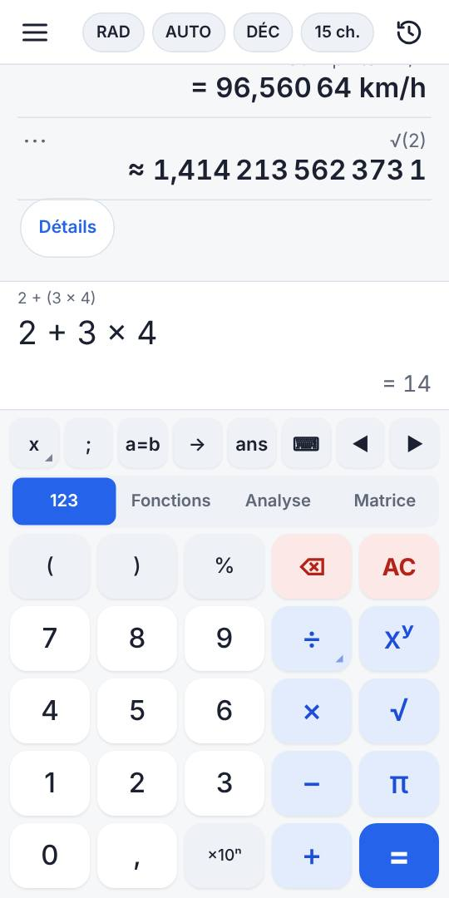
Sur un téléphone avec un grand texte, la rangée de touches du haut (x, ans, flèches, ⌨) est masquée. ⌨ au bout des onglets l'affiche.
Calculs de base
Saisir un calcul
Ce qu’il fait Tapez le calcul comme dans un livre de maths, avec les touches ou, après ⌨, avec le clavier du téléphone.
- Tapez le calcul avec les touches de chiffres et d'opérateurs. Les parenthèses sont sur les touches ( ).
- Une touche de la page Fonctions (sin, log, √ et d'autres) écrit « sin( » et autres.
- Les unités et les devises s'écrivent par leur nom (
5 km,100 USD). Pour convertir, utilisez « to » (5 km to mi). - Appuyez sur = pour calculer.
2^10 → = 1024, 5! → = 120, sin(30°) → = 1/2
÷ × + et autres dans un champ vide continuent à partir du dernier résultat, « ans ».
- Des parenthèses qui ne vont pas par paires donnent une erreur. Le message dit quoi corriger.
Lire le résultat : exact, approché, fractions
Ce qu’il fait Un résultat qui commence par « = » est exact ; un résultat qui commence par « ≈ » est approché. Les résultats avec des fractions ou √ affichent aussi la valeur décimale.
1/3 + 1/4→= 7/12 ≈ 0,5833333333(la fraction reste, avec sa valeur décimale)sqrt(8)→= 2√2 ≈ 2,828427125pi × 2→= 2π ≈ 6,283185307
- Le bouton du haut passe d'exact à approché ou automatique.
- Le nombre de chiffres est Précision (chiffres significatifs) dans Paramètres (10 par défaut).
Pro C’est une fonction de QCalc Pro. Jusqu'à 1000 chiffres, c'est gratuit. Au-delà de 1000, jusqu'à 200000 chiffres, c'est une fonction de QCalc Pro.
Un résultat très long défile dans l'historique pour lire tous les chiffres ; le copier copie tous les chiffres.
Effacer et annuler
Ce qu’il fait ⌫ efface un caractère, AC vide le champ de saisie. Juste après, Annuler au-dessus du champ le récupère.
- ⌫ efface le caractère avant le curseur ; maintenez-le pour continuer à effacer.
- AC vide le champ et Annuler apparaît au-dessus.
- Annuler récupère le calcul.
Une ligne effacée de l'historique se récupère aussi pendant quelques secondes avec Annuler en bas de l'écran.
Format des nombres : le séparateur décimal
Ce qu’il fait Choisissez si le séparateur décimal est « . » ou « , » et comment les chiffres sont groupés. Au départ, QCalc écrit les nombres comme la région de votre téléphone.
- Ouvrez Paramètres.
- Dans Format des nombres, choisissez Automatique, 1,234.5, 1.234,5 ou 1 234,5.
- Ce que vous tapez et ce que vous voyez suit le format choisi.
Avec 1 234,5 (le format habituel en France), deux et demi s'écrit 2,5 : 2,5 + 3,75 → = 6,25
Avec la virgule décimale, séparez les arguments d'une fonction par « ; » : max(1,5; 2).
- Taper
1.5avec la virgule décimale donne une erreur ; le message montre la bonne forme.
Historique et mémoire
Ce qu’il fait Les calculs et les résultats restent dans l'historique, jusqu'à 300 lignes. 🕘 en haut à droite recherche, additionne les lignes choisies, exporte et efface.
- Touchez un résultat de l'historique pour choisir Mettre l’expression dans le champ de saisie, Copier le résultat et autres.
- ⋯ à droite d'une ligne propose ☆ Épingler en haut et Ajouter une courte note.
- 🕘 propose Rechercher dans l’historique, Choisir des lignes : somme, moyenne, copier, Exporter l’historique (fichier CSV) et Effacer tout l’historique.
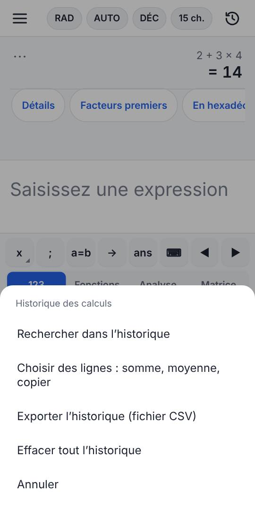
Les lignes épinglées avec une étoile restent même quand l'historique est plein.
Épingles, notes et recherche
- Choisissez ☆ Épingler en haut dans le ⋯ d'une ligne : elle monte avec les autres lignes épinglées.
- Choisissez Ajouter une courte note dans ⋯ et écrivez une note courte. Elle s'affiche au-dessus du calcul.
- Dans 🕘, Rechercher dans l’historique n'affiche que les lignes dont le calcul, le résultat ou la note contient les mots tapés.
Une ligne avec la note « loyer » apparaît quand vous cherchez « loyer ».
Additionner des lignes
- Choisissez Choisir des lignes : somme, moyenne, copier dans 🕘.
- Touchez les lignes à additionner.
- La somme et la moyenne s'affichent en bas, avec leur unité si les unités concordent. Copier copie les lignes.
- Des lignes d'unités différentes (m et kg) ne s'additionnent pas ; la raison s'affiche.
Exporter l'historique (CSV)
Pro C’est une fonction de QCalc Pro.
Ce qu’il fait Enregistre l'historique dans un fichier CSV que les tableurs ouvrent.
- Choisissez Exporter l’historique (fichier CSV) dans 🕘.
- Choisissez où l'enregistrer dans l'écran d'enregistrement d'Android.
Touches mémoire (M+ M− MR MC)
Ce qu’il fait Les touches mémoire d'une calculatrice de poche. La valeur est gardée sous sa forme exacte.
- Ouvrez Plus de paramètres dans Paramètres et activez Afficher les touches mémoire (M+ M− MR MC).
- Avec un résultat affiché, M+ l'ajoute à la mémoire et M− le soustrait.
- MR met la mémoire dans le champ de saisie ; MC l'efface.
Touches et aides à la saisie
Les quatre pages de touches
Ce qu’il fait Les touches sont sur quatre pages qui se changent avec les onglets du haut.
| Page | Touches principales |
|---|---|
| 123 | Chiffres, + − × ÷, parenthèses, %, ^, √ |
| Fonctions | sin, cos, tan, log, ln, valeur absolue, factorielle et plus |
| Analyse | Dérivée d/dx, intégrale ∫, limite lim, somme Σ, produit Π, équations |
| Matrice | Matrice ▦, déterminant det, transposée, inverse |
Si vous ne connaissez pas le nom d'une fonction, cherchez-le dans Listes : fonctions, unités, constantes (Listes).
Cases □ (les formulaires)
Ce qu’il fait Les touches d'intégrale et de limite ouvrent un formulaire avec des cases □. Remplissez les cases et le calcul est écrit.
- Appuyez sur ∫ dans la page Analyse.
- Tapez la fonction et les bornes inférieure et supérieure. Case suivante ▶ passe à la case suivante.
- Le résultat s'affiche en bas. = le garde dans l'historique.
Le ⋯ du formulaire contient Effacer toutes les cases et Utiliser ce formulaire ›.
Suggestions
Ce qu’il fait Pendant la saisie, des suggestions s'affichent sous le champ : après « to », les unités cibles ; avec le clavier, des noms de fonctions et d'unités.
- Tapez
5 km to: mi, m, ft et d'autres sont proposés. - Touchez-en une pour l'écrire.
Écrire des fonctions, des unités et des devises
Ce qu’il fait Les calculs s'écrivent comme dans Qalculate!. Les formes courantes :
| Tapez | Signifie |
|---|---|
sqrt(x), √x | Racine carrée |
x^2 | Puissance |
5 km to mi | Convertir une unité |
100 USD to EUR | Convertir une devise (avec les taux de change) |
solve(x^2 − 5x + 6 = 0) | Résoudre une équation |
diff(x^3) | Dérivée |
integrate(x^2; 0; 1) | Intégrale définie (avec la virgule décimale, séparez les arguments par « ; ») |
ans | Le dernier résultat |
Dix unités japonaises traditionnelles (tsubo, shaku, shō, kan et d'autres) fonctionnent aussi : 30 tsubo to m^2.
Listes : fonctions, unités, constantes, vos définitions
Ce qu’il fait Listes : fonctions, unités, constantes dans le menu a quatre onglets : fonctions, unités et devises, variables et constantes, et vos propres définitions, chacun avec une recherche.
- Ouvrez Listes : fonctions, unités, constantes depuis ☰.
- Choisissez un onglet et tapez une partie d'un nom dans la case du haut.
- Touchez un élément pour lire sa description ; Insérer le met dans le champ de saisie.
Dans l'onglet de vos définitions, vous pouvez garder des variables (r = 5 cm) et des fonctions ; elles restent pour la prochaine fois.
Devises et taux de change
Ce qu’il fait Les devises se convertissent comme 100 USD to EUR. Les taux de change se mettent à jour seuls tous les 7 jours (avec internet).
- Pour les mettre à jour tout de suite, appuyez sur Mettre à jour les taux de change maintenant dans Paramètres.
- L'heure de la dernière mise à jour est sur la même ligne.
- Sans internet, ils ne se mettent pas à jour ; les derniers téléchargés sont utilisés.
Outils
Trouver un outil
Ce qu’il fait Outils dans le menu contient les outils du quotidien et ceux des formes, des volumes et des données. Cherchez selon ce que vous voulez faire.
- « ? » : ouvre ce manuel à l'outil
- Exemples : un toucher les remplit
- Cases : tapez les nombres (un nombre gris est un exemple)
- Résultats : un toucher met le calcul dans le champ, garde le résultat dans l'historique ou le copie
- Une ligne d'avertissement (outils d'argent ou de sécurité)
- Une ligne d'explication
- Ouvrez Outils depuis ☰.
- Tapez en haut ce que vous voulez faire, comme « prêt », « cuve » ou « moyenne ».
- Touchez l'outil.
- Touchez un exemple ou tapez les nombres. Le résultat s'affiche aussitôt.
Les outils utilisés récemment viennent en premier. Ouvrir QCalc rapidement tout en bas ajoute le widget ou la vignette.
Prix : remise et taxe
Ce qu’il fait Le prix avec ou sans taxe, une ou deux remises, et comment arrondir.
- Ouvrez Prix : remise et taxe dans Outils.
- Tapez le prix, la remise (%) et la taxe.
- Choisissez si le prix inclut la taxe et comment arrondir.
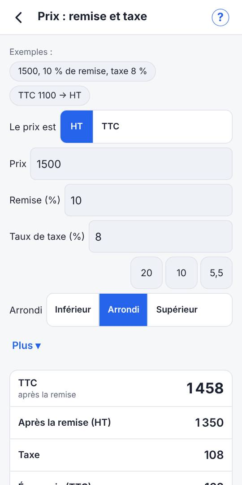
1500 avec 10 % de remise et 8 % de taxe → 1 458 taxe comprise (1 350 hors taxe, taxe 108)
- Pour obtenir le prix hors taxe à partir d'un prix taxe comprise, choisissez d'abord « taxe comprise ».
Pourcentages
Ce qu’il fait Quel pourcentage de B représente A, et la variation de A à B en pourcentage.
- Ouvrez Pourcentages et choisissez quoi calculer.
- Tapez A et B.
30 sur 120 → 25 %. De 80 à 100 → hausse de 25 %
Prix unitaire : lequel est le moins cher
Ce qu’il fait Compare le prix aux 100 g (100 mL, à la pièce) de deux produits.
- Ouvrez Prix unitaire : lequel est moins cher.
- Tapez le prix et la quantité (500 g, 1 kg) de A et de B.
298 pour 500 g et 498 pour 1 kg → B est moins cher (59,6 et 49,8 aux 100 g, 16,4 % de moins)
Partager l'addition
Ce qu’il fait Ce que paie chaque personne, arrondi comme vous le choisissez.
- Ouvrez Partager l’addition et tapez le total et le nombre de personnes.
- Choisissez d'arrondir au-dessus ou au-dessous.
10000 pour 3 → chacun 3 333,34 (au-dessus ; 0,02 de trop)
Prêt
Ce qu’il fait La mensualité, le total des intérêts et le tableau des paiements, en mensualités égales ou en capital égal.
- Ouvrez Prêt.
- Tapez le montant, le taux annuel et les années.
- Choisissez le mode de remboursement.
- Ouvrez Échéances, mois par mois pour voir le tableau.
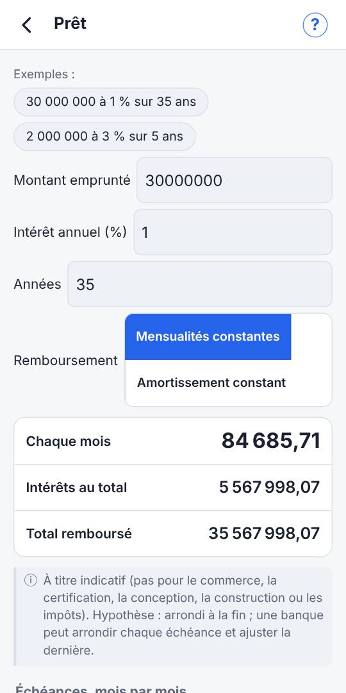
30 000 000 à 1 % sur 35 ans (mensualités égales) → 84 685,71 par mois, total des intérêts 5 567 998,07
Pro C’est une fonction de QCalc Pro. Enregistrer le tableau en fichier CSV est une fonction de QCalc Pro (le voir et le copier est gratuit).
- Taper 0,01 pour 1 % donne 0,01 %. Tapez le nombre de pour cent.
Épargne et intérêts composés
Ce qu’il fait Ce que devient une épargne mensuelle ou une somme avec des intérêts composés.
- Ouvrez Épargne et intérêts composés et tapez le montant mensuel (ou la somme de départ), le taux annuel et les années.
30 000 par mois, 3 %, 20 ans → 9 849 059,94 (versé 7 200 000 ; intérêts 2 649 059,94)
Dates
Ce qu’il fait Les jours entre deux dates, n jours après ou avant, un âge, le jour de la semaine.
- Ouvrez Dates et choisissez quoi calculer.
- Tapez les dates et les jours.
100 jours à partir d'aujourd'hui → la date et son jour de la semaine
Heures
Ce qu’il fait Additionne et soustrait des h:mm, et donne les heures travaillées sans les pauses et la paie.
- Ouvrez Durées et tapez l'heure de début, l'heure de fin et la pause.
- Tapez le salaire horaire pour obtenir la paie.
De 9:00 à 17:30 avec 1:00 de pause → 7:30 travaillées (7,5 heures)
Convertir des unités et des devises
Ce qu’il fait Tapez un nombre dans l'une des deux lignes ; l'autre est convertie. Longueur, poids, volume, température, consommation, devises et plus.
- Ouvrez Convertir unités et devises et choisissez le type de grandeur avec les boutons du haut.
- Choisissez les unités des deux lignes.
- Tapez un nombre dans l'une d'elles.
- ⇅ échange les lignes.
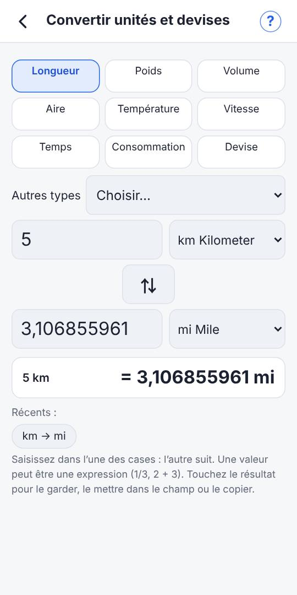
5 km → 3,106855961 mi
Touchez la ligne du résultat pour mettre « 5 km to mi » dans le champ de saisie ou le garder dans l'historique.
Formes : aire, volume, longueur
Ce qu’il fait Choisissez une forme d'après son dessin et tapez ses mesures : l'aire, le périmètre, le volume et la surface s'affichent.
- Ouvrez Formes planes ou Solides dans Outils.
- Touchez le dessin d'une forme.
- Tapez les mesures indiquées sur le dessin (r, h). Les mesures rondes peuvent être un rayon ou un diamètre.
- Les résultats changent pendant la saisie ; un toucher utilise ou copie leur calcul.
Une sphère de rayon 2 → volume 32π/3 ≈ 33,51032164, surface 16π
Choisissez un matériau pour obtenir le poids.
⟳ 3D, en haut à gauche du dessin, montre le solide en 3D pour le faire tourner (Solides et cuves en 3D).
Cuves : liquide et niveau
Ce qu’il fait La quantité de liquide dans une cuve horizontale ou verticale, ou dans un récipient rond, à partir de la hauteur du liquide, et la hauteur pour une quantité.
- Ouvrez Cuves : liquide et niveau dans Outils.
- Choisissez la forme et tapez le diamètre (ou le rayon) et la longueur.
- Tapez la hauteur du liquide et choisissez l'unité de longueur.
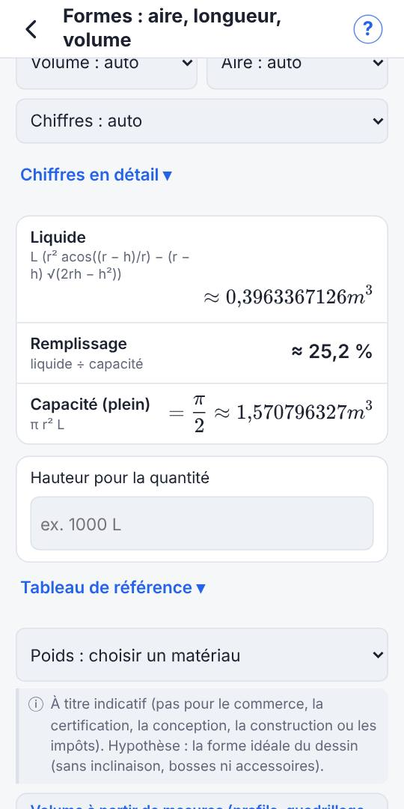
Horizontale, diamètre 1 m, longueur 2 m, liquide à 30 cm → 0,3963367126 m³ (environ 396 L)
Tableau de référence ▾ donne la quantité pour chaque hauteur.
- Un rayon tapé dans la case du diamètre donne à peu près le quart. Vérifiez rayon ou diamètre.
Fonds de cuves et barèmes de jaugeage
Pro C’est une fonction de QCalc Pro.
Ce qu’il fait Ajoute les fonds des deux extrémités de la cuve (hémisphérique, semi-elliptique 2:1, torisphérique) à la quantité de liquide et au volume total, avec un barème de la quantité pour chaque hauteur.
- Dans Cuves : liquide et niveau, choisissez un cylindre horizontal ou vertical.
- Choisissez Hémisphérique ou Semi-elliptique 2:1 dans Fonds ; les fonds torisphériques sont dans Autres fonds ▾.
- L est la longueur du corps (sans les fonds).
- Dans Tableau de référence ▾, tapez le pas : un tableau des hauteurs et des quantités, à copier ou à enregistrer en CSV.
Les fonds plats (un simple cylindre, comme avant) sont gratuits.
Solides et cuves en 3D
Pro C’est une fonction de QCalc Pro.
Ce qu’il fait La forme de Solides ou de Cuves, avec les dimensions saisies, en 3D à faire tourner. Au-dessus, en grand, le volume et l’aire de la surface de l’outil (pour une cuve, la quantité de liquide et la capacité).
- Dans Solides ou Cuves des outils, choisissez une forme et saisissez ses dimensions.
- Appuyez sur ⟳ 3D en haut à gauche du dessin (lu comme Voir en 3D). La forme grandit en 3D.
- Faites-la tourner d’un doigt, zoomez à deux doigts. Un solide de révolution montre sa coupe avec Couper en deux.
- ← Retour à la forme revient à l’outil avec la même forme et les mêmes dimensions.
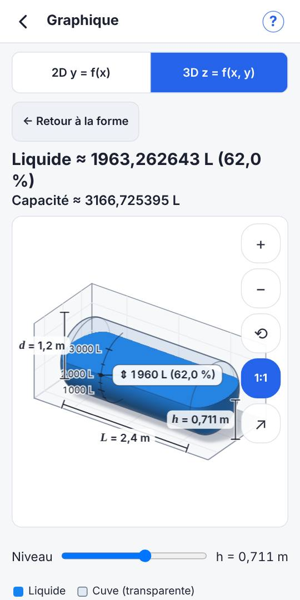
Un cylindre de 30 cm de diamètre et de 50 cm de hauteur → volume 11250π ≈ 35342,91735 cm³
La cuve est dessinée transparente, le liquide comme un solide de sa propre couleur. Faites glisser vers le haut ou le bas depuis le niveau (la case de la quantité) pour le déplacer : Hauteur du liquide dans l’outil change aussi. Un glissement ailleurs fait tourner le graphique. Le curseur Niveau en dessous le déplace aussi.
Les traits sur la paroi sont des quantités rondes : dans une cuve horizontale ou sphérique, leurs écarts sont visiblement inégaux.
Les nombres au niveau sont arrondis pour la lecture (3 chiffres significatifs, % avec une décimale) ; les valeurs exactes sont au-dessus du graphique et dans l’outil (Chiffres des résultats).
Sans QCalc Pro, la ligne Le faire tourner en 3D (QCalc Pro) apparaît juste au-dessus des résultats.
Chiffres des résultats
Ce qu’il fait Combien de chiffres les résultats de Formes, Cuves, Solide à partir d’un profil et Faire un solide montrent après « ≈ ». Les valeurs exactes (11250π) restent. Ce réglage est indépendant de Précision (chiffres significatifs) de la calculatrice.
- Au-dessus des résultats, choisissez dans Chiffres : auto, par exemple Chiffres : 2 décimales.
- Pour davantage, ouvrez Chiffres en détail ▾.
- Choisissez Décimales ou Chiffres significatifs et saisissez le nombre de chiffres (0 à 15).
- Séparément pour chaque type de grandeur règle séparément volume, aire, longueur, poids et %.
Le volume d’un cylindre 11250π ≈ 35342,91735 cm³ → avec 2 décimales 11250π ≈ 35342,92 cm³ ; avec 4 chiffres significatifs 11250π ≈ 35340 cm³
Les nombres Dans l’image 3D (au niveau, sur l’échelle, les dimensions) ont leur propre réglage : en auto, 3 chiffres significatifs et % avec une décimale.
L’arrondi est Arrondir au plus proche, Arrondir vers le bas ou Arrondir vers le haut ; les zéros finaux, Garder (2,50) ou Supprimer (2,5).
Un tableau enregistré en CSV a d’abord tous les chiffres ; avec Comme affiché, il a ceux de l’écran.
Les mêmes réglages sont dans Paramètres, sous Chiffres des outils ; Revenir aux réglages initiaux remet l’auto.
Pas plus de 15 chiffres : les nombres sont calculés en double précision. Avec les réglages initiaux, tout % a une décimale.
Volume à partir de mesures
Ce qu’il fait Le volume d'un terrassement ou d'un bassin à partir d'un tableau de sections (sections moyennes, méthode de Simpson) ou d'une grille de hauteurs.
- Ouvrez Volume à partir de mesures dans Outils.
- Choisissez sections ou hauteurs de points, et tapez les distances et les aires (ou les hauteurs).
- Choisissez l'unité de longueur : le volume est donné en m³ et en L.
Sections x² (de 0 à 4, tous les 1 m) → sections moyennes 22 m³, méthode de Simpson 64/3 m³ ≈ 21,33 m³
Deux colonnes copiées d'un tableur peuvent être collées dans le tableau.
Solide à partir d'un profil
Pro C’est une fonction de QCalc Pro.
Ce qu’il fait Le volume, la contenance, le poids et la surface d'une pièce tournée ou d'un récipient à partir d'un tableau de positions et de diamètres le long de son axe.
- Ouvrez Solide à partir d’un profil dans Outils.
- Tapez les positions et les diamètres (ou les rayons). Deux lignes à la même position font une marche.
- Choisissez l'unité (mm, cm, m, in).
- Plus ▾ ajoute le profil intérieur d'un récipient et le retrait de la céramique.
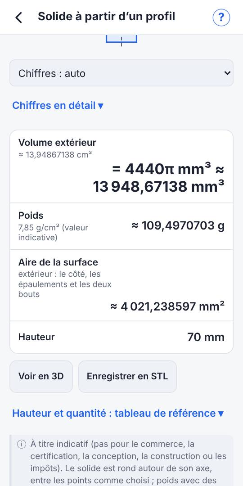
L'arbre étagé de l'exemple → volume extérieur 4440π mm³ ≈ 13,95 cm³, environ 109,5 g en fer
Voir en 3D montre la forme ; un fichier STL s'imprime avec une imprimante 3D (Fichiers STL).
Fichiers STL pour imprimantes 3D
Pro C’est une fonction de QCalc Pro.
Ce qu’il fait Enregistre un solide de révolution, un solide à sections connues ou un solide à partir d'un profil en fichier STL pour imprimantes 3D.
- Appuyez sur Enregistrer en STL sous les résultats du solide.
- Choisissez « 1 unité = □ mm » et la finesse des triangles.
- Appuyez sur Enregistrer le fichier STL et choisissez où l'enregistrer.
Avant d'imprimer, vérifiez la taille et les parois dans votre logiciel de tranchage.
Statistiques
Ce qu’il fait Pour une colonne : la moyenne, la médiane, l'écart type, les quartiles et plus ; pour deux colonnes : la droite de régression et la corrélation.
- Ouvrez Statistiques dans Outils.
- Tapez les valeurs ou collez-les depuis un tableur.
- Avec deux colonnes, 📈 Voir dans un graphique trace les points et la droite.
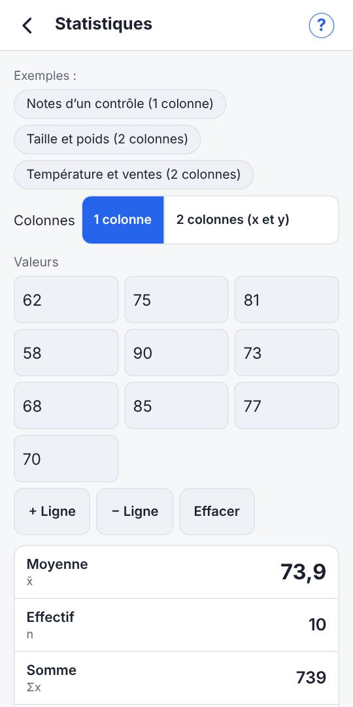
Notes de 10 personnes → moyenne 73,9, médiane 74, écart type (échantillon) 9,938142013
Les quartiles sont d'abord donnés par la méthode des manuels du lycée au Japon ; celle des tableurs est dans « Plus ».
- Une valeur qui n'est pas un nombre s'affiche avec sa ligne et comment la corriger.
Notes de calcul
Ce qu’il fait Une note avec un calcul par ligne et son résultat à droite. Donnez un nom à une valeur et utilisez-le dans les lignes du dessous.
- Ouvrez Notes de calcul dans Outils.
- Tapez un calcul par ligne, comme
rent = 85000 JPY. - Utilisez le nom dans une ligne suivante :
rent × 12. - Une ligne avec le mot du total additionne les résultats du dessus.
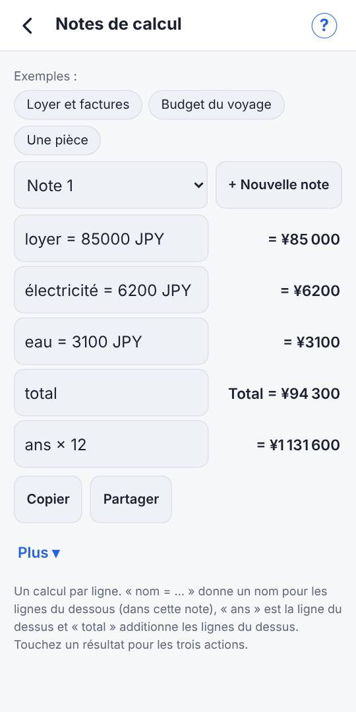
loyer 85000, électricité 6200, eau 3100 (JPY) → la ligne du total affiche ¥94300
Pro C’est une fonction de QCalc Pro. La première note est gratuite. Plus de notes et leur enregistrement en texte ou CSV sont des fonctions de QCalc Pro.
Une ligne qui commence par # ou // est un commentaire (non calculée).
Graphiques
Graphique 2D
Ce qu’il fait Trace des courbes y = f(x). Glissez pour les déplacer, pincez pour zoomer.
- Ouvrez Graphique depuis ☰ (ou 📈 au-dessus du champ de saisie).
- Tapez les fonctions, une par ligne, et l'intervalle de x.
- Appuyez sur Tracer.
- Touchez le graphique pour lire les coordonnées d'un point.
Analyse ▾ donne la dérivée, des tangentes, les zéros et les extremums.
Touchez un exemple sous le graphique pour le tracer.
Aire et longueur
Ce qu’il fait L'aire entre une courbe et l'axe des x ou entre deux courbes, et la longueur d'une courbe. Les bornes de l'intervalle se glissent au doigt.
- Tracez les fonctions dans le graphique 2D.
- Ouvrez Aire et longueur ▾.
- Tapez l'intervalle a et b, ou glissez les lignes de ses bornes.
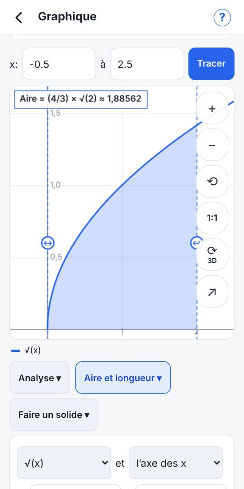
√x de 0 à 2 → aire 1,885618083
Passez à Longueur pour la longueur de la courbe.
Créer un solide (solides de révolution)
Ce qu’il fait Le volume et la surface du solide obtenu en faisant tourner une région du graphique 2D autour d'un axe.
- Tracez les fonctions dans le graphique 2D (par exemple
xetx^2). - Appuyez sur le bouton rond ⟳ 3D du graphique. Le solide autour de l'axe des x s'affiche aussitôt en 3D, avec son volume en grand au-dessus (QCalc Pro). Sans Pro, le graphique 2D montre la coupe du solide (reflétée de l'autre côté de l'axe) et son volume.
- Pour un autre axe, revenez avec ← Retour en 2D et touchez sa ligne ; la ligne y = k se glisse au doigt. Voir en 3D le montre de nouveau en 3D.
- ↶ Annuler revient à l'axe précédent.
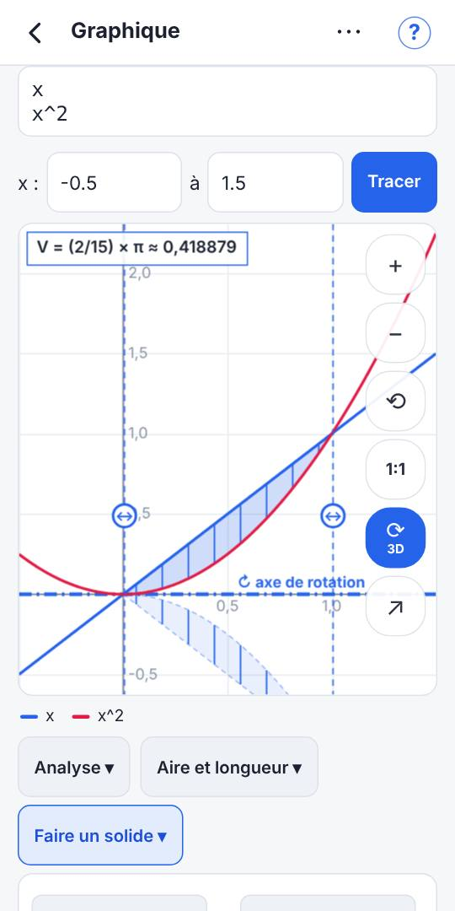
Entre y = x et y = x², autour de l'axe des x → volume 2π/15 ≈ 0,4188790205
Montrer la méthode par des lignes trace les disques (rondelles) ou les coquilles. La ligne Théorème de Pappus-Guldin : compare le volume obtenu par le centre de gravité à l'intégrale.
Pro C’est une fonction de QCalc Pro. Faire tourner le solide au doigt en 3D est une fonction de QCalc Pro, comme le graphique 3D. Sans Pro, la ligne Le faire tourner en 3D (QCalc Pro) s'affiche à la place.
Solides à sections connues
Ce qu’il fait Le volume d'un solide dont la base est la région entre deux courbes, avec des carrés, des triangles équilatéraux ou des demi-cercles dressés dessus.
- Ouvrez Faire un solide ▾.
- Choisissez Sections (formes posées sur la région).
- Choisissez la forme (□ △ ◠) ; d'autres sont dans Autres formes ▾.
Des carrés sur la région entre y = x et y = x² → volume 1/30
Graphique 3D
Pro C’est une fonction de QCalc Pro.
Ce qu’il fait Trace des surfaces z = f(x, y) et des solides en 3D que vous faites tourner au doigt.
- Choisissez 3D z = f(x, y) dans Graphique.
- Tapez jusqu'à quatre fonctions et les intervalles de x et de y, puis appuyez sur Tracer.
- Faites tourner avec un doigt et zoomez avec deux.
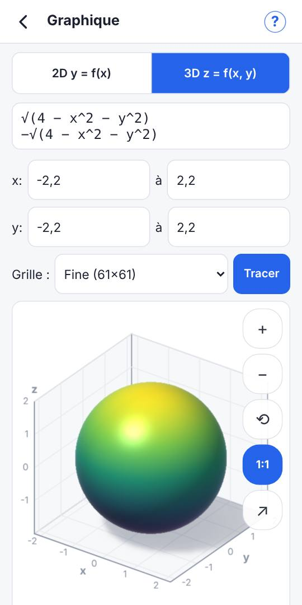
Dérivées partielles ▾ trace ∂f/∂x et ∂f/∂y.
Volume et surface (3D)
Ce qu’il fait Le volume sous une surface du graphique 3D (ou entre deux surfaces) et l'aire de la surface.
- Tracez les surfaces dans le graphique 3D.
- Ouvrez Volume et surface ▾ : le volume et la surface s'affichent aussitôt.
- Choisissez la région : un rectangle, un disque, la partie fermée ou une région donnée par des formules.
La sphère de l'exemple (rayon 2) → volume 32π/3, surface 16π
Sous Exemple, en bas, chaque solide peut être choisi : Tracer le dessine en 3D avec les valeurs de Formes, et Changer les nombres ouvre Formes.
Pour un solide fait dans le graphique 2D (⟳ 3D) ou dans Solide à partir d’un profil, Volume et surface ▾ dans sa vue 3D affiche les valeurs trouvées là (Valeurs du solide de révolution). Les outils de la région reviennent quand d'autres formules sont tracées.
Là où les surfaces n'ont pas de valeurs réelles dans une partie de la région, Mesurer la partie enclose ne mesure que là où elles sont réelles.
Formulaires : analyse, équations, matrices
Dérivées, intégrales, limites, sommes
Ce qu’il fait Les touches de la page Analyse ouvrent un formulaire avec des cases □.
- Appuyez sur d/dx, ∫, lim, Σ ou une autre touche de la page Analyse.
- Remplissez les cases. La variable peut rester x.
- Le résultat s'affiche en bas ; = le garde dans l'historique.
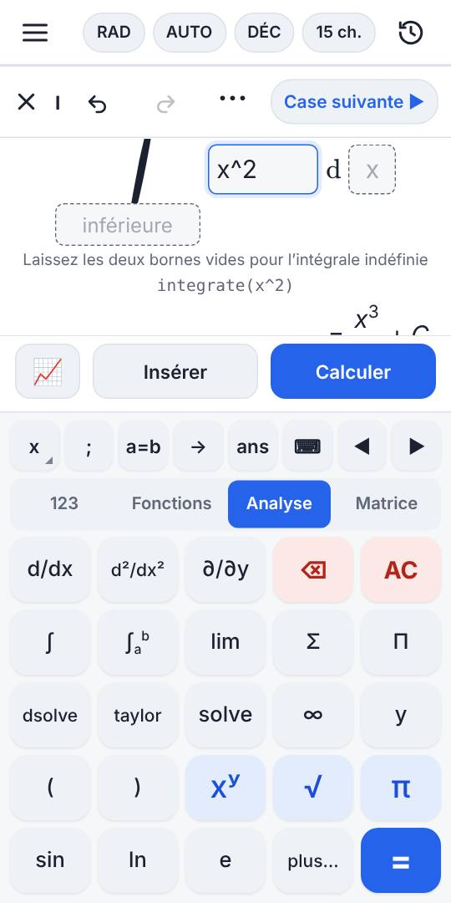
∫ x² sin(x) dx de 0 à π → π² − 4 ≈ 5,869604401
Une limite peut être Des deux côtés, Par la droite (+) ou Par la gauche (−).
Équations
Ce qu’il fait Résout des équations et des systèmes d'équations.
- Appuyez sur la touche d'équation de la page Analyse ou tapez
solve(x^2 − 5x + 6 = 0). - Le résultat s'affiche comme « x = 2 ou x = 3 ».
solve(x^2 − 5x + 6 = 0) → x = 2, x = 3
Matrices et vecteurs
Ce qu’il fait ▦ dans la page Matrice écrit une matrice comme un tableau (jusqu'à 30 × 30).
- Appuyez sur ▦ dans la page Matrice.
- Choisissez les lignes et les colonnes et remplissez les cases.
- Calculez avec det, transposée, inverse et les autres touches.
Des tableaux d'un tableur peuvent être collés ; Copier comme tableau (pour un tableur) dans ⋯ les recopie.
Réglages, langue, widget
Réglages
Ce qu’il fait Les réglages les plus utilisés sont en haut ; ceux que presque personne ne change sont dans Plus de paramètres. Un changement s'applique aussitôt.
| Réglage | Ce qu'il change |
|---|---|
| Unité d’angle | Radians, degrés, grades |
| Exact ou approché | Automatique, toujours exact, toujours approché |
| Format des nombres | Le séparateur décimal et les groupes de chiffres (Format des nombres) |
| Fractions | Automatique, décimal, fraction, fraction mixte |
| Précision (chiffres significatifs) | La précision des calculs (10 par défaut) |
| Chiffres des outils | Les chiffres des résultats de Formes, Cuves, etc. (Chiffres des résultats) |
| Clair ou sombre | Les couleurs de l'écran |
| Taille du texte | Le texte de l'historique, du champ de saisie et du résultat |
| Thème de couleurs | La couleur des touches (sauf le bleu : QCalc Pro) |
| Afficher le résultat pendant la saisie | L'aperçu |
| Mettre à jour les taux de change maintenant | Télécharge les taux tout de suite |
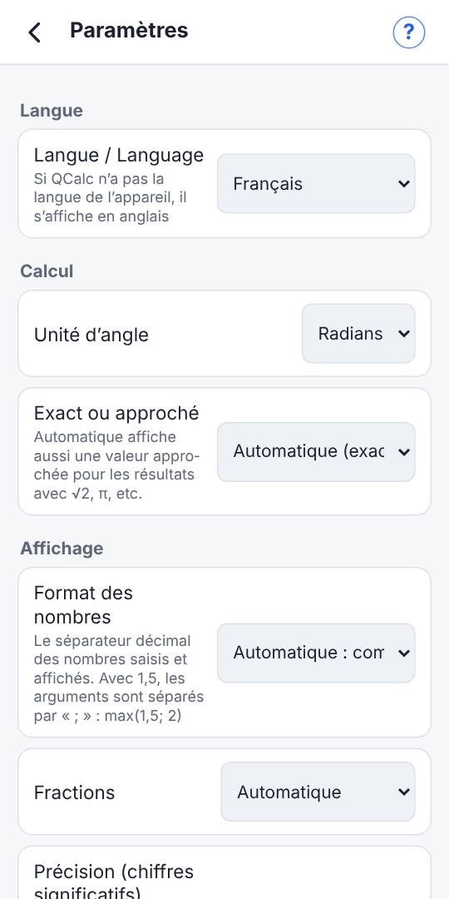
Réinitialiser tous les paramètres remet tout aux valeurs de départ (la langue est gardée).
Langue
Ce qu’il fait L'app est en English, 日本語, Español, Deutsch, Français, 한국어 et 繁體中文.
- Choisissez Langue dans ☰.
- Choisissez une langue : l'app se rouvre dans cette langue, avec l'historique et le calcul en cours.
- Comme l’appareil revient à la langue du téléphone.
Depuis Android 13, la langue peut aussi se choisir pour chaque app dans les réglages du téléphone.
Widget, vignette et raccourcis
Ce qu’il fait Ouvrez QCalc vite depuis un widget sur l'écran d'accueil, une vignette des réglages rapides ou les raccourcis de l'icône. Tout est gratuit.
- Ouvrez Ouvrir QCalc rapidement tout en bas de Outils.
- Choisissez le widget ou la vignette et suivez l'écran.
- Maintenez l'icône appuyée pour les raccourcis Nouveau calcul, Outils et Convertir.
Le widget affiche le dernier résultat et des boutons pour calculer, les outils et convertir.
À propos de cette app et confidentialité
Ce qu’il fait À propos de cette app montre la version, la confidentialité, les licences et des liens vers le code source.
- Faire connaître QCalc partage l'adresse de QCalc sur Google Play.
- Signaler un bogue ou une idée ouvre un brouillon dans l'appli de courriel avec seulement la version, l'appareil et la langue ; vous décidez de l'envoyer ou non.
- QCalc ne collecte aucune donnée personnelle et n'envoie rien.
- Il n'utilise internet que pour télécharger les taux de change.
- Le moteur de calcul est sous licence GNU GPL v2 ou ultérieure (Licences open source).
QCalc Pro
Ce qui est gratuit
Ce qu’il fait Les calculs, les graphiques 2D, les aires et longueurs, les solides de révolution, les formes, les cuves (fonds plats), les outils du quotidien, la conversion, les statistiques, la première note de calcul, le widget et ce manuel sont gratuits, sans publicité.
Ce qu'ajoute QCalc Pro
Ce qu’il fait Un seul achat débloque toutes les fonctions Pro, y compris celles des futures mises à jour. Sans abonnement ni publicité.
| Fonction | Section de ce manuel |
|---|---|
| Plus de 1000 chiffres significatifs (jusqu'à 200000) | Lire le résultat |
| Graphiques 3D, voir en 3D | Graphique 3D |
| Thèmes de couleur (7 couleurs) | Réglages |
| Exporter l'historique (CSV) | Exporter l'historique |
| Tableaux en CSV (prêt, épargne) | Prêt |
| Fonds de cuves et barèmes de jaugeage | Fonds de cuves |
| Solide à partir d'un profil | Solide à partir d'un profil |
| Solides et cuves en 3D | Solides et cuves en 3D |
| Fichiers STL | Fichiers STL |
| GIF et images sans la marque | Partager |
| Plus de notes de calcul, enregistrées en fichier | Notes de calcul |
Comment faire › sur une ligne des fonctions Pro ouvre sa section de ce manuel.
Acheter et restaurer
Le prix s'affiche sur l'écran d'achat de Google Play.
- Ouvrez QCalc Pro depuis ☰ (ou depuis le panneau qui montre une fonction verrouillée).
- Appuyez sur Acheter QCalc Pro et achetez dans l'écran de Google Play.
- Sur un téléphone où vous l'avez déjà acheté, ou après une réinstallation, appuyez sur Restaurer un achat.
L'achat appartient à votre compte Google, il fonctionne donc aussi sur vos autres appareils.
En cas de problème
Questions fréquentes
- Le résultat ne s'affiche pas en décimal : vérifiez le bouton du haut ou Exact ou approché.
- x donne des résultats étranges : x est une variable ; multipliez avec la touche ×.
- Les taux de change sont anciens : appuyez sur Mettre à jour les taux de change maintenant (avec internet).
- La rangée de touches du haut manque : avec un grand texte elle est masquée ; ⌨ au bout des onglets l'affiche.
- Le graphique 3D ne s'ouvre pas : le graphique 3D est une fonction de QCalc Pro (QCalc Pro).
Messages d'erreur et comment corriger
Ce qu’il fait Un message d'erreur dit ce qui ne va pas et comment le corriger. Les plus courants :
| Message | Comment corriger |
|---|---|
| Les parenthèses ne vont pas par paires | Mettez autant de ( que de ) |
| 1.5 ne peut pas être lu (avec la virgule décimale) | Tapez 1,5 ; séparez les arguments par « ; » |
| Les unités ne concordent pas | Additionnez des grandeurs de même type (m et kg ne s'additionnent pas) |
| Tracez d'abord une fonction | Appuyez sur Tracer dans le graphique avant d'ouvrir l'aire ou le solide |
| Le temps limite est atteint | Allongez le temps limite ou simplifiez le calcul |
Le temps limite d'un calcul
Ce qu’il fait Un calcul très long s'arrête après Durée maximale (secondes) (20 secondes par défaut, de 1 à 3600).
- Un avis s'affiche pendant le calcul ; touchez-le pour l'arrêter.
- Pour laisser plus de temps, changez Durée maximale (secondes) dans Plus de paramètres de Paramètres.
Avertissements sur l'usage des résultats
Les résultats de QCalc sont donnés à titre indicatif. Ne les utilisez pas pour le commerce ou la certification (y compris la métrologie légale), la conception et la construction, les déclarations fiscales, la médecine ni des décisions de sécurité.
- La quantité dans une cuve suppose la forme idéale de la cuve ; une vraie cuve peut différer.
- Les poids utilisent des masses volumiques typiques.
- Les taxes sont les taux habituels de novembre 2026 et se modifient dans la case.
- Les taux de change sont ceux téléchargés, pas ceux d'une vraie transaction.
- Les outils d'argent ou de sécurité affichent une ligne d'avertissement sous les résultats.
Glossaire
| Mot | Signification |
|---|---|
| Valeur exacte | Une valeur avec des fractions, √ et π. Commence par « = » |
| Valeur approchée | Une valeur en décimal. Commence par « ≈ » |
| Chiffres significatifs | Le nombre de chiffres d'un résultat (la précision) |
| ans | Le dernier résultat |
| Aperçu | Le résultat sous le champ de saisie pendant la saisie |
| Solide de révolution | Un solide obtenu en faisant tourner une région autour d'un axe |
| Fond | Le couvercle de chaque extrémité d'une cuve |
| Barème de jaugeage | Un tableau de la quantité pour chaque hauteur de liquide |
| STL | Un format de fichier de solides pour imprimantes 3D |
| CSV | Un tableau dans un fichier texte que les tableurs ouvrent |
| QCalc Pro | Les fonctions pour le travail, débloquées par un achat |
Index
- ↶ Annuler — Créer un solide (solides de révolution)
- ☆ Épingler en haut — Historique et mémoire, Épingles, notes et recherche
- Acheter et restaurer — Acheter et restaurer
- Acheter QCalc Pro — Acheter et restaurer
- Additionner des lignes — Additionner des lignes
- Afficher le résultat pendant la saisie — Réglages
- Afficher les touches mémoire (M+ M− MR MC) — Touches mémoire (M+ M− MR MC)
- Aire et longueur — Aire et longueur
- Aire et longueur ▾ — Aire et longueur
- Ajouter une courte note — Historique et mémoire, Épingles, notes et recherche
- Analyse — Les quatre pages de touches, Cases □ (les formulaires), Dérivées, intégrales, limites, sommes, Équations
- Analyse ▾ — Graphique 2D
- Annuler — Effacer et annuler
- Arrondir au plus proche — Chiffres des résultats
- Arrondir vers le bas — Chiffres des résultats
- Arrondir vers le haut — Chiffres des résultats
- Automatique — Format des nombres : le séparateur décimal
- Autres fonds ▾ — Fonds de cuves et barèmes de jaugeage
- Autres formes ▾ — Solides à sections connues
- Avertissements sur l'usage des résultats — Avertissements sur l'usage des résultats
- Case suivante ▶ — Cases □ (les formulaires)
- Cases □ (les formulaires) — Cases □ (les formulaires)
- Ce qu'ajoute QCalc Pro — Ce qu'ajoute QCalc Pro
- Ce que fait QCalc — Ce que fait QCalc
- Ce qui est gratuit — Ce qui est gratuit
- Changer les nombres — Volume et surface (3D)
- Chiffres : 2 décimales — Chiffres des résultats
- Chiffres : auto — Chiffres des résultats
- Chiffres des outils — Chiffres des résultats, Réglages
- Chiffres des résultats — Chiffres des résultats
- Chiffres en détail ▾ — Chiffres des résultats
- Chiffres significatifs — Chiffres des résultats
- Choisir des lignes : somme, moyenne, copier — Historique et mémoire, Additionner des lignes
- Clair ou sombre — Réglages
- Comme affiché — Chiffres des résultats
- Comme l’appareil — Langue
- Comment faire › — Ce qu'ajoute QCalc Pro
- Convertir — Widget, vignette et raccourcis
- Convertir des unités et des devises — Convertir des unités et des devises
- Convertir unités et devises — Nouveautés de la 1.12.0, Convertir des unités et des devises
- Copier — Additionner des lignes
- Copier comme tableau (pour un tableur) — Matrices et vecteurs
- Copier le résultat — Historique et mémoire
- Couper en deux — Solides et cuves en 3D
- Créer un solide (solides de révolution) — Créer un solide (solides de révolution)
- Cuves — Nouveautés de la 1.12.0, Solides et cuves en 3D
- Cuves : liquide et niveau — Cuves : liquide et niveau, Fonds de cuves et barèmes de jaugeage
- Dans l’image 3D — Chiffres des résultats
- Dates — Nouveautés de la 1.12.0, Dates
- Des deux côtés — Dérivées, intégrales, limites, sommes
- Devises et taux de change — Devises et taux de change
- Durée maximale (secondes) — Le temps limite d'un calcul
- Durées — Nouveautés de la 1.12.0, Heures
- Décimales — Chiffres des résultats
- Dérivées partielles ▾ — Graphique 3D
- Dérivées, intégrales, limites, sommes — Dérivées, intégrales, limites, sommes
- Effacer et annuler — Effacer et annuler
- Effacer tout l’historique — Historique et mémoire
- Effacer toutes les cases — Cases □ (les formulaires)
- Enregistrer en STL — Fichiers STL pour imprimantes 3D
- Enregistrer le fichier STL — Fichiers STL pour imprimantes 3D
- Exact ou approché — Réglages, Questions fréquentes
- Exemple — Volume et surface (3D)
- Exemples et astuces — Exemples et astuces dans l'app
- Exemples et astuces dans l'app — Exemples et astuces dans l'app
- Exporter l'historique (CSV) — Exporter l'historique (CSV)
- Exporter l’historique (fichier CSV) — Historique et mémoire, Exporter l'historique (CSV)
- Faire connaître QCalc — À propos de cette app et confidentialité
- Faire un solide ▾ — Solides à sections connues
- Fichiers STL pour imprimantes 3D — Fichiers STL pour imprimantes 3D
- Fonctions — Les quatre pages de touches
- Fonds — Fonds de cuves et barèmes de jaugeage
- Fonds de cuves et barèmes de jaugeage — Fonds de cuves et barèmes de jaugeage
- Format des nombres — Format des nombres : le séparateur décimal, Réglages
- Format des nombres : le séparateur décimal — Format des nombres : le séparateur décimal
- Formes : aire, volume, longueur — Formes : aire, volume, longueur
- Formes planes — Formes : aire, volume, longueur
- Fractions — Réglages
- Garder (2,50) — Chiffres des résultats
- Graphique — Graphique 2D, Graphique 3D
- Graphique 2D — Graphique 2D
- Graphique 3D — Graphique 3D
- Hauteur du liquide — Solides et cuves en 3D
- Heures — Heures
- Hémisphérique — Fonds de cuves et barèmes de jaugeage
- Insérer — Listes : fonctions, unités, constantes, vos définitions
- Langue — Langue
- Le faire tourner en 3D (QCalc Pro) — Solides et cuves en 3D, Créer un solide (solides de révolution)
- Le temps limite d'un calcul — Le temps limite d'un calcul
- Les quatre pages de touches — Les quatre pages de touches
- Licences open source — À propos de cette app et confidentialité
- Lire le résultat : exact, approché, fractions — Lire le résultat : exact, approché, fractions
- Listes : fonctions, unités, constantes — Les quatre pages de touches, Listes : fonctions, unités, constantes, vos définitions
- Listes : fonctions, unités, constantes, vos définitions — Listes : fonctions, unités, constantes, vos définitions
- Longueur — Aire et longueur
- Matrice — Les quatre pages de touches, Matrices et vecteurs
- Matrices et vecteurs — Matrices et vecteurs
- Messages d'erreur et comment corriger — Messages d'erreur et comment corriger
- Mesurer la partie enclose — Volume et surface (3D)
- Mettre l’expression dans le champ de saisie — Historique et mémoire
- Mettre à jour les taux de change maintenant — Devises et taux de change, Réglages, Questions fréquentes
- Mode d’emploi — Exemples et astuces dans l'app
- Montrer la méthode par des lignes — Créer un solide (solides de révolution)
- Niveau — Solides et cuves en 3D
- Notes de calcul — Nouveautés de la 1.12.0, Notes de calcul
- Nouveau calcul — Widget, vignette et raccourcis
- Nouveautés de la 1.12.0 — Nouveautés de la 1.12.0
- Outils — Nouveautés de la 1.12.0, Trouver un outil, Prix : remise et taxe, Formes : aire, volume, longueur
- Ouvrir QCalc rapidement — Trouver un outil, Widget, vignette et raccourcis
- Par la droite (+) — Dérivées, intégrales, limites, sommes
- Par la gauche (−) — Dérivées, intégrales, limites, sommes
- Paramètres — Lire le résultat : exact, approché, fractions, Format des nombres : le séparateur décimal, Touches mémoire (M+ M− MR MC), Devises et taux de change
- Partager des images et des GIF — Partager des images et des GIF
- Partager l'addition — Partager l'addition
- Partager l’addition — Nouveautés de la 1.12.0, Partager l'addition
- Partager une image du graphique — Partager des images et des GIF
- Plus de paramètres — Touches mémoire (M+ M− MR MC), Réglages, Le temps limite d'un calcul
- Plus ▾ — Solide à partir d'un profil
- Pourcentages — Nouveautés de la 1.12.0, Pourcentages
- Prix : remise et taxe — Nouveautés de la 1.12.0, Prix : remise et taxe
- Prix unitaire : lequel est le moins cher — Prix unitaire : lequel est le moins cher
- Prix unitaire : lequel est moins cher — Nouveautés de la 1.12.0, Prix unitaire : lequel est le moins cher
- Précision (chiffres significatifs) — Lire le résultat : exact, approché, fractions, Chiffres des résultats, Réglages
- Prêt — Nouveautés de la 1.12.0, Prêt
- Questions fréquentes — Questions fréquentes
- Rechercher dans l’historique — Historique et mémoire, Épingles, notes et recherche
- Restaurer un achat — Acheter et restaurer
- Revenir aux réglages initiaux — Chiffres des résultats
- Réglages — Réglages
- Réinitialiser tous les paramètres — Réglages
- Saisir un calcul — Saisir un calcul
- Sections (formes posées sur la région) — Solides à sections connues
- Semi-elliptique 2:1 — Fonds de cuves et barèmes de jaugeage
- Signaler un bogue ou une idée — À propos de cette app et confidentialité
- Solide à partir d'un profil — Solide à partir d'un profil
- Solide à partir d’un profil — Solide à partir d'un profil, Volume et surface (3D)
- Solides — Nouveautés de la 1.12.0, Formes : aire, volume, longueur, Solides et cuves en 3D
- Solides et cuves en 3D — Solides et cuves en 3D
- Solides à sections connues — Solides à sections connues
- Statistiques — Nouveautés de la 1.12.0, Statistiques
- Suggestions — Suggestions
- Supprimer (2,5) — Chiffres des résultats
- Séparément pour chaque type de grandeur — Chiffres des résultats
- Tableau de référence ▾ — Cuves : liquide et niveau, Fonds de cuves et barèmes de jaugeage
- Taille du texte — Réglages
- Thème de couleurs — Réglages
- Théorème de Pappus-Guldin : — Créer un solide (solides de révolution)
- Touches mémoire (M+ M− MR MC) — Touches mémoire (M+ M− MR MC)
- Tracer — Graphique 2D, Graphique 3D, Volume et surface (3D), Messages d'erreur et comment corriger
- Trouver un outil — Trouver un outil
- Unité d’angle — Réglages
- Utiliser ce formulaire › — Cases □ (les formulaires)
- Valeurs du solide de révolution — Volume et surface (3D)
- Voir en 3D — Solides et cuves en 3D, Solide à partir d'un profil, Créer un solide (solides de révolution)
- Volume et surface (3D) — Volume et surface (3D)
- Volume et surface ▾ — Volume et surface (3D)
- Volume à partir de mesures — Volume à partir de mesures
- Vos trois premiers calculs — Vos trois premiers calculs
- Widget, vignette et raccourcis — Widget, vignette et raccourcis
- À propos de cette app — À propos de cette app et confidentialité
- À propos de cette app et confidentialité — À propos de cette app et confidentialité
- Échéances, mois par mois — Prêt
- Écrire des fonctions, des unités et des devises — Écrire des fonctions, des unités et des devises
- Épargne et intérêts composés — Nouveautés de la 1.12.0, Épargne et intérêts composés
- Épingles, notes et recherche — Épingles, notes et recherche
- Équations — Équations
- ← Retour en 2D — Créer un solide (solides de révolution)
- ← Retour à la forme — Solides et cuves en 3D
- 📈 Voir dans un graphique — Statistiques